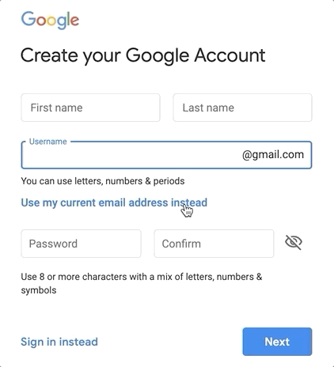

“What I cannot create, I do not understand.” Richard Feynman
Learn how to think about technologies in the law by building your own. In this project-based course, open to non-programmers and coders alike, we explore the technical, legal, and ethical dimensions behind the use of computer algorithms by legal practitioners and the justice system. Projects range from the creation of simple document review and automation tools to the construction of expert systems and narrow AIs.
Students' final projects will address real-world needs. You won't just learn how to do things, you'll actually do them. Design your own project, or join the Lab's COVID-19 response—the Document Assembly Line Project—focusing on access to justice during the pandemic. For help calibrating your expectations, read this statement.
Not a Suffolk Law student? You're welcome to work through the materials here, join our Slack channel, and even help out with the Document Assembly Line, but I'm afraid you won't be able to attend our synchronous meet ups/classes, and no one will grade your work. That being said, you're free to work through what's here at your own pace. ;)
Optional Readings/Viewings.
If you want to learn more about some of the topics discussed in the video above, you might enjoy the following.
- How to Fix A Drug Scandal, a Netflix series examining the Dookhan Drug Lab Scandal. I haven't had a chance to watch this, but my impression from those who have seen it are that it does a reasonably good job except for its minimization of the public defender's role in the litigation. CPCS (the defenders) and the ACLU worked together on these cases throughout, but I don't believe CPCS attorneys were given much if any screen time.
- The Information: A History, A Theory, A Flood by James Gleick, includes a good discussion of Babbage and Lovelace.
- Arcadia, a play by Tom Stoppard about time, uncertainty, and chaos bases its protagonist, Thomasina Coverly, on Ada Lovelace. Lovelace's father, Lord Byron, actually helps to drive part of the plot. If you liked Shakespeare in Love or Rosencrantz & Guildenstern< are Dead you check it out.
How this Works
Starting in late August 2020, a new level will appear on this website every week. If you are taking the class for credit, you must complete each level before its weekly meet up. If we're lucky, the levels will show up early, and you can get a head start. Enrolled students will also need to complete a final project, described here.
Each level, aside from this one (since it's the first) should take about seven hours to complete. Including the video above and our weekly meet up, should take about X hours. They will generally include of a mix of readings, videos, and independent projects.
Your answers to questions on a page like this are NOT saved or graded. They are presented as an aid to help you in the moment. Your weekly reflections, however, are saved and shared with Colarusso.
Course Texts
We'll start reading from these texts in Level 2. If you haven't already, you can purchase or rent a copy from the bookstore.
Readings
~ 20 Minutes
We will discuss the following readings at our weekly meet up.
Two Windows / Two Screen?
~ 10 Minutes
lorem ispsum
Secure Passwords
~ 10 Minutes
You'll find yourself creating a bunch of accounts as you work your way through these lessons. Since you'll be working with other people's data, you need to take security seriously. That means picking a good password. What's a good password? One that's hard for someone to "guess"/discover. By now we all know a long pass phrase or random collection of numbers and letters is good form, but it's all for not if you use the same password for multiple accounts and one of them gets hacked. Likewise, if there's a post-it on your laptop with your login, it doesn't really help is someone steals your laptop. If you'll be working with Lab data, you need to follow the following best practices: (1) store your Lab-associated accounts info in an encrypted password manager; (2) don't reuse passwords; (3) actually use random passwords; and (4) set up a login/lock for your computer(s) and phone(s).
Want a free and simple option? We suggest LastPass. If you like wordplay, however, there's always RememBear. In general, you may want to choose a manager that allows for local storage of passwords on a single device (like your phone). This usually means that you don't have to pay for a subscription. It also means your passwords stay on a single device, not the cloud. However, this makes phone backups even more important, and sometimes (as with RememBear) you have to sign up for a free subscription and cancel it before the trial runs out to access the free local functionality. Always read the fine print! Anywho, you should be backing up all of your devices! Ask Colarusso about his 1L laptop failure in the middle of his Contracts exam.
Not required, unless you're housing confidential client data (as a rule this shouldn't be the case for Lab students), but suggested: (1) if you can, turn on two-factor authentication; and (2) Encrypt your hard drive.
Slack
~ 10 Minutes
https://suffolklitlab.org/slack/
https://app.slack.com/client/T8UJQGP47/C018N4LHFQ9
Text Editor
~ 10 Minutes
You'll need a tool to read and write code, and no, Microsoft Word won't do the trick. You need a text editor. Have you ever tried to cut and paste something from Word only to have the formatting all messed up? That's because there's a bunch of unseen stuff mixed in with your text. Unlike word processors, text editors don't touch anything but text and they often highlight your code, making it easier to read. Some popular (and free) text editors include Atom, Notepadd++ (Windows only), and Visual Studio Code. If you don't have a text editor, download one from the preceding list. It will come in handy soon. Also, these editors (esp. Atom) are highly customizable. See e.g., Atom Packages (you may want to disable "autocomplete-plus" and download and enable "spell-check").
Google Account
~ 5 Minutes
We'll be using Google Forms to collect your reflections and log your work. This will require you to have a Google Account. You can create an account here. If you don't want to create a Gmail account, don't worry. You can associate your account with an existing email. See e.g.,

Hello World (GitHub Pages)
~ 10 Minutes
Self-Reflection and Logging Your Work
~20 min
ask if folks would rather meet during the first r last half of our time when we don't need the full time
Synchronous Meet Up, AKA our Class Time
1 hour | August 24, 2020 @ 4pm Eastern
If you're an enrolled student, we'll be meeting on Monday August 24th at 5pm via Zoom at this link. You should have received the password from me earlier. If you don't have the password, and you are a regisiterd student, DM me on Slack, and I can give it to you. Note: this is an hour after our official start time of 4pm Easter because we will only need an hour of our two-hour block. This only works, however, if you've done the above readings et al. If you're not an enrolled student, I'm afraid you can't join us, but you can still say "Hi" on the Slack channel.
We will use this time to: (1) troubleshoot any issues folks might have had working through the Knowledge Base; (2) start work on your mission, and; (3) discuss the readings.
† Time estimates are just that—estimates. The assumptions used to calculate reading time are as follows: 48 pages is assumed to take roughly an hour to read. When working with non paginated texts, it is assumed that a page is roughly equal to 250 words. Videos assume both 2X and 1X viewing. Each level, except for this first one, should include about 7 hours of work.